遊びで植物を育てよう
2022/07/24
アジサイの花柄を一部取りました。
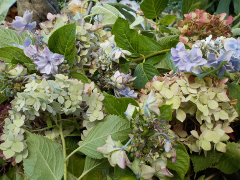
茶色くなったり萎れてしまったアジサイの花を切り取りました。
形がよくて色が綺麗なものは残しました。
【アジサイTOP】
【木TOP】
【園芸TOP】
2022/07/05
アジサイ銀河は水やり不足でいまいちでした。
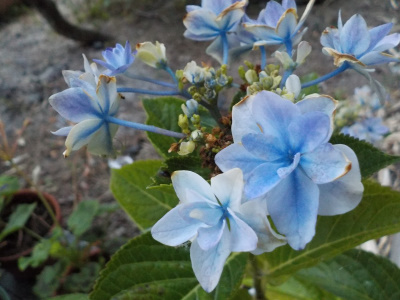
日焼けとか水不足であちこち茶色いです。ガクも少ないような小さいような。
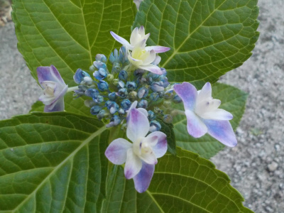
去年挿し木したものは花が小さくてとっても可愛い。
小さい鉢で育てたら小さい花をキープ出来るのかな？
【アジサイTOP】 【木TOP】 【園芸TOP】
2022/06/03
霧島の恵が見頃になりました。
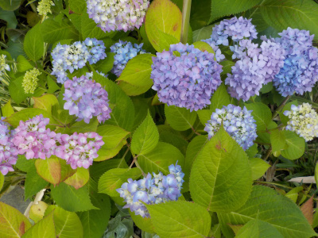
小さい花が沢山咲きました。
これは地植えなんですが、地植えは水やり楽でいいですね。
今ある鉢植えをやめて地植えにしようかな。
【アジサイTOP】 【木TOP】 【園芸TOP】
2022/05/08
母の日のアジサイ。
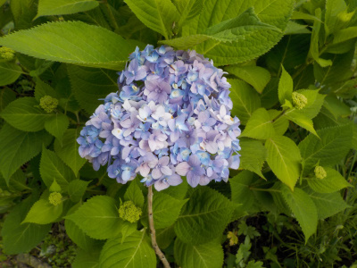
母の日に色づいたのはこの1本だけでした。1本でもこの時期にしては大きい花かな。
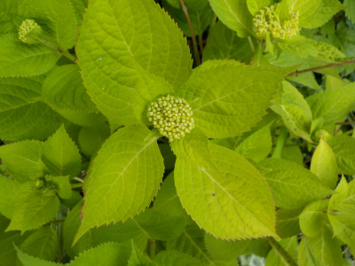
上の花の標準的なものは、だいたいこれくらいです。
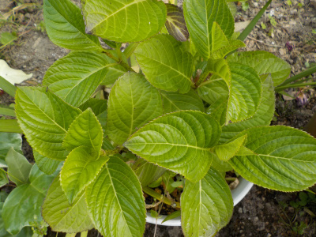
違う種類のアジサイはまだ花はありません。
ナチュラルに母の日に咲かない花を母の日の送るのって意味不明な気がする。
【アジサイTOP】 【木TOP】 【園芸TOP】
2022/05/05
鉢植えのアジサイが萎れていました。
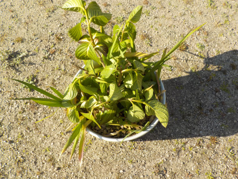
気温が高くなったので萎れやすくなりました。
夕方になったら水をやります。
【アジサイTOP】 【木TOP】 【園芸TOP】
2022/04/17
アジサイがこれから色づきます。
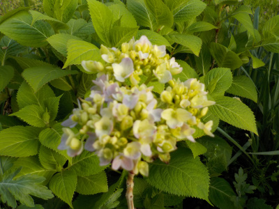
1本花が出来ていました。
今年は母の日が早いみたいでが、余裕で間に合いそうです。
【アジサイTOP】 【木TOP】 【園芸TOP】
2021/11/13
アジサイの植替え
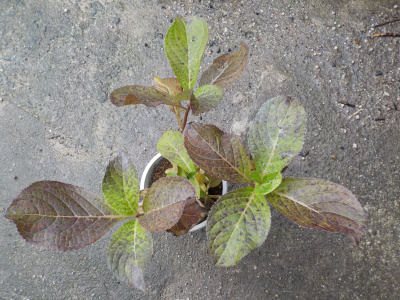
底面給水鉢で育ててたアジサイが大きくなったので植替えしました。
土が少ない分軽くて、よく倒れていました。
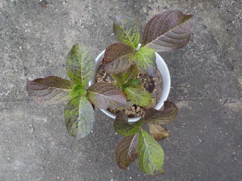
セリアの大きめのプラスチック鉢に植替えしました。土の量が倍以上になったのでたぶんもう倒れないでしょう。
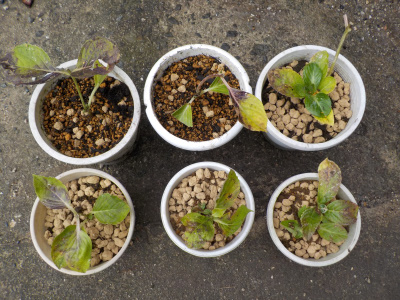
今年挿し木したアジサイを鉢上げしました。６鉢も増えました。もう来年からは増やさなくていいです。
【アジサイTOP】 【木TOP】 【園芸TOP】
2021/09/25
秋のアジサイ開花
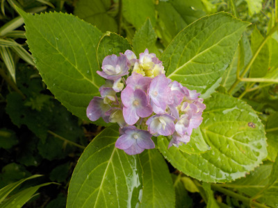
アジサイが開花しました。今のところ咲いてるのはこれだけです。
一月前に開花したものより大きいですね。
【アジサイTOP】 【木TOP】 【園芸TOP】
2021/08/22
アジサイに小さい花が一つ咲いています。
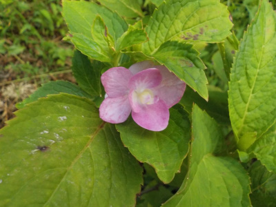
今咲いてるのはこれだけです。四季咲きなのでもっと咲いて欲しいですが、上手くいかないです。
以前はもっと咲いてた気がするんだけどな。
【アジサイTOP】 【木TOP】 【園芸TOP】
2021/07/23
アジサイの挿し木をしました。
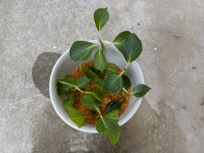
自作の底面給水鉢を使ってアジサイの挿し木をしました。
実はアジサイの挿し木がしたくて、この底面給水鉢を自作しました。
これがあれば水の管理も楽だし、大きい葉っぱもあまり気になりません。
後は成果があるかどうかです。6本挿し木して、何本成功するかな？
【アジサイTOP】
【木TOP】
【園芸TOP】
過去の記事
2021/06/26
アジサイの花柄を取りました。
2021/05/23
アジサイに色がつきました。
2021/04/24
アジサイの花の元が出来ました。
2021/02/13
軒下のアジサイに芽が出ました。
2020/12/27
アジサイの土を入れ替えました。
2020/06/07
アジサイの色が綺麗になってきました。
2020/04/25
とっても早い時期にアジサイが咲いていました。
2020/03/01
アジサイに小さなブツブツがいっぱいありました。
2019/12/22
アジサイをウールマットに植えました。
2019/12/15
アジサイを地に植え替えしました。
【アジサイTOP】 【木TOP】 【園芸TOP】
2019/10/20
今年最後のアジサイかな？
2019/09/23
アジサイの蕾が出来ました。
2019/08/25
アジサイに小さい花がつきました。
2019/06/16
昔ながらのアジサイが色づき出しました。
2019/06/02
霧島の恵みは今が見頃です。
2019/05/12
母の日のアジサイ
2019/04/21
紫陽花に小さい花が付きました。
2019/03/09
アジサイの挿し木を鉢に植え替えました。
2018/12/24
アジサイの植え替えをしました。
2018/10/07
今年は四季咲きアジサイが1回しか咲きませんでした。
【アジサイTOP】 【木TOP】 【園芸TOP】
2018/06/10
今年最初のアジサイの挿し木
2018/06/02
アジサイがしおれていました。
2018/05/26
挿し木のアジサイを鉢植えにしました。
2018/05/19
挿し木したアジサイに花がつきました。
2018/05/13
母の日のアジサイ
2018/04/07
アジサイの花がもうできていました。
2018/04/01
挿し木したアジサイの花から新芽がでました。
2018/03/11
アジサイの芽がふくらんできました。
2018/01/28
アジサイに新しい芽が出ています。
2017/09/24
霧島の恵 ４輪目です。
2017/08/26
アジサイに２回目の花が咲きました。
2017/07/23
アジサイに新しい花かな？
2017/06/25
アジサイの花を摘み取りました。
2017/06/10
紫陽花の花が終わって紫になりました。
2017/05/14
霧島の恵を買いました。
【アジサイTOP】
【木TOP】
【園芸TOP】
アジサイは簡単に増えて楽しい。でも植える場所がない。
【おいしいものを食べよう。】【たくさん寝よう。】
【ソロ活をしよう!】【季節感のあることをしよう。】【動画視聴はほどほどに。】【当サイトの全てのコンテンツは無断転載禁止です。】